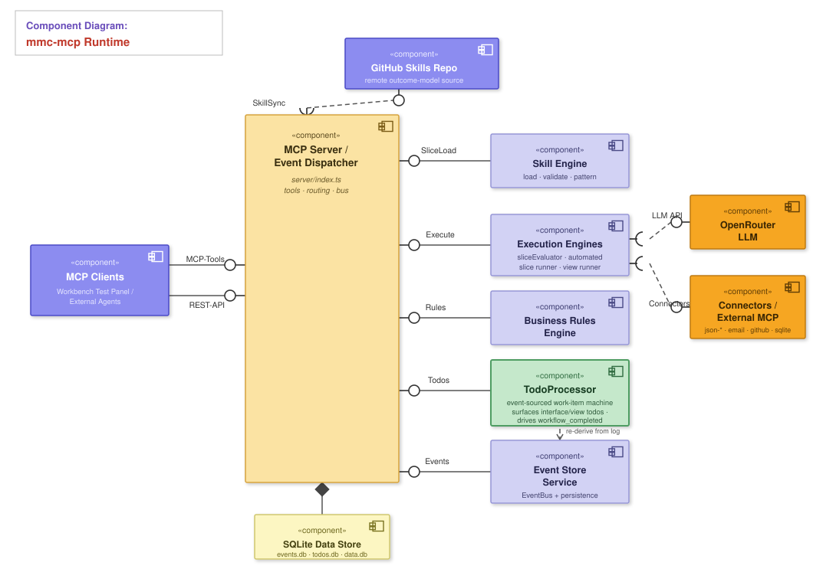

Rendered companion to docs/architecture-analysis.md. Open this file in any browser.
Who drives the runtime and over which transport.
flowchart LR
subgraph authoring["Authoring / test (session-scoped)"]
WB["mmc-workbench :8888
Test panel"]
end
subgraph clients["External agents (disk-scoped)"]
CD["Claude Desktop / CLI
(stdio)"]
WF["mmc-workflow :3002
(HTTP)"]
end
MCP["mmc-mcp :3001
MCP runtime + event bus"]
GH[("GitHub
skills repo")]
EXT["External MCP servers
(GitHub, SQLite)"]
WB <-->|"HTTP /mcp"| MCP
CD <-->|"stdio"| MCP
WF <-->|"HTTP /mcp"| MCP
MCP -->|"sync skills/"| GH
MCP -->|"proxy tools"| EXT
Components with provided/required interfaces (ball & socket), assembly connectors, a composition diamond to the data store, and a dashed «use» dependency on the GitHub skill source. The TodoProcessor (green) is a first-class component: the event-sourced work-item machine that surfaces interface/view todos and drives workflow_completed.

Block diagram of how data moves through the runtime. Arrows are labelled with what flows (tool calls, slice data, facts, events, outcomes, todos). Note the feedback loop (↻): emitted outcomes re-enter the bus and can trigger further automation.
flowchart TB
Client(["MCP Client — workbench / external agent"])
subgraph IN["① Transport + request handling — server/index.ts"]
direction LR
TLIST["ListTools
build tool catalogue"]
TCALL["CallTool
complete-slice · log-event · get-next-event · view"]
end
BUS{{"② EventBus — sequence + pub/sub"}}
subgraph SUBS["③ Bus subscribers (routers)"]
direction LR
R1["store router"]
R2["automation dispatch"]
R3["client router + completion"]
end
subgraph RUN["④ Execution engines"]
direction LR
SE["sliceEvaluator
human / complete-slice"]
ASR["automatedSliceRunner
automation"]
VSR["viewSliceRunner
view / read-only"]
TP["TodoProcessor"]
end
KNOW["⑤ Skill engine
load · validate · pattern · trigger maps"]
GH[("skills/ ◁ GitHub sync")]
EFFECT["⑥ Side effects
connectors · LLM · external MCP"]
ES[("event store
SQLite / in-memory")]
TS[("todo store")]
%% inbound
Client -->|"tool call"| TCALL
Client -->|"list request"| TLIST
TLIST -->|"filtered tool list"| Client
%% knowledge feeds handlers + engines
GH --> KNOW
KNOW -->|"slice data + trigger maps"| TCALL
KNOW -->|"slice defs"| SE
KNOW -->|"slice defs"| ASR
KNOW -->|"slice defs"| VSR
KNOW -->|"slice defs"| TP
%% complete-slice + view + direct events
TCALL -->|"facts + sliceId"| SE
TCALL -->|"raw event"| BUS
TCALL -->|"call view tool"| VSR
SE -->|"emit outcome"| BUS
VSR -->|"read facts"| ES
VSR -->|"projection (no event)"| Client
%% jobs / side effects
SE -->|"query/command jobs"| EFFECT
ASR -->|"query/command jobs"| EFFECT
%% bus fan-out
BUS --> R1
BUS --> R2
BUS --> R3
BUS --> TP
R1 -->|"persist (test→mem, prod→SQLite)"| ES
R2 -->|"trigger"| ASR
ASR -->|"read session facts"| ES
ASR -->|"emit outcome ↻"| BUS
R3 -->|"deliver event / workflow_completed"| Client
%% todos
TP -->|"re-derive from log"| ES
TP -->|"write work item"| TS
TP -->|"surface interface/view todo"| R3
How a published outcome event flows through the bus to persistence, automation, and the client.
sequenceDiagram
participant C as Client (workbench / agent)
participant H as CallTool handler
participant B as EventBus
participant R1 as Router#1 store
participant R2 as Router#2 automation
participant R3 as Router#3 client+done
C->>H: complete-slice / log-event-to-bus
H->>B: publish(outcome event)
B->>R1: persist (test→in-mem, prod→SQLite)
B->>R2: session skill? → automatedSliceRunner (fire-and-forget)
Note over R2: disk path → resolveDiskSliceData → handler
B->>R3: routed/automated? else terminal→workflow_completed
R3-->>C: deliver event / completion to waiting get-next-event